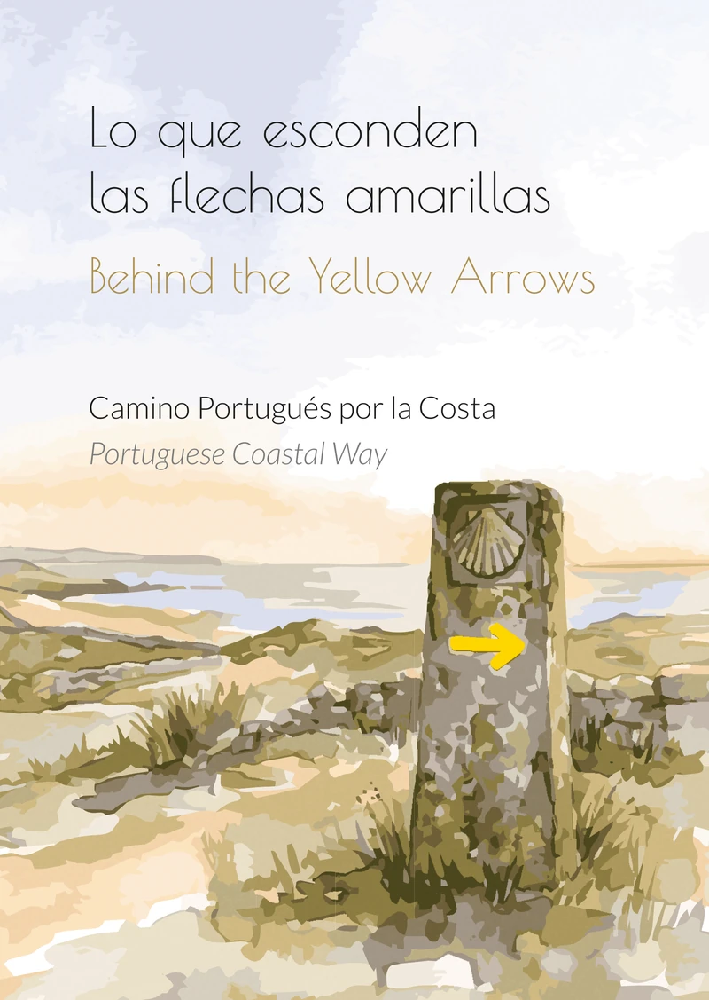
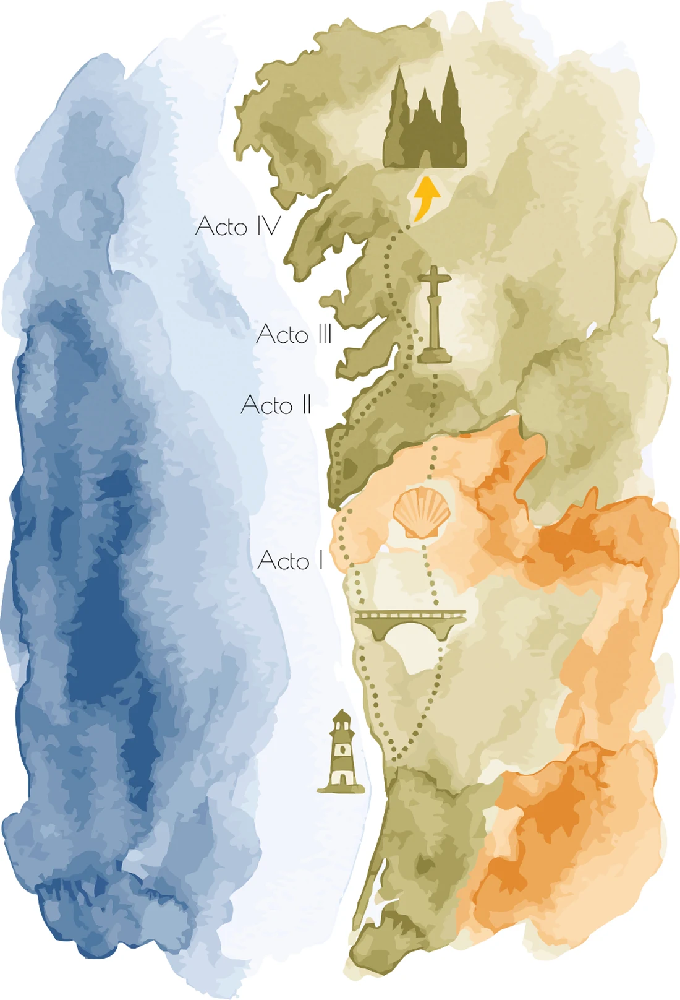

Camino Portugués por la Costa · De Oporto a Santiago
Lo que esconden
las flechas amarillas
Behind the Yellow Arrows
Detrás de cada flecha amarilla hay algo que nadie te cuenta.
Behind every yellow arrow there is something nobody tells you.
Un libro de bolsillo, ilustrado en acuarela, con 25 lugares del camino contados en español y en inglés.
Edición de 2026 · Precio por confirmar

El libro
Lo que la flecha señala pero nunca explica
Las flechas amarillas dicen al peregrino por dónde ir, pero no qué hay a su alrededor. Este libro cuenta algo pequeño de 25 lugares del Camino Portugués por la Costa, de Oporto a Santiago: una piedra, una leyenda, un plato.
No es una guía práctica. No da distancias ni albergues. Es un libro para llevar en el bolsillo y leer en las paradas, y para guardar al volver.
Por qué funciona
De bolsillo
Formato A6 y poco peso. Cabe en la mochila de quien ya carga bastante.
Bilingüe
Cada texto en español y, debajo, en inglés sencillo, pensado para peregrinos de cualquier país.
Ilustrado a mano
Una acuarela por lugar y una flecha amarilla escondida en cada una.
Un recuerdo del Camino
Se lee durante la ruta y se queda como regalo o recuerdo al terminarla.
Una muestra
Así es por dentro
Cada lugar ocupa una doble página, con la ilustración a la izquierda y la historia a la derecha.
azulesUn mojón con la flecha azul de Fátima y la amarilla de Santiago

Contenido
Cuatro actos, de Oporto a Santiago
El libro sigue el camino en el orden en que se recorre. Además, cuatro fichas temáticas y un epílogo.
Acto I
Oporto y el Miño
- Porto
- Matosinhos
- Vila do Conde
- Esposende
- Viana do Castelo
- Âncora
- Moledo
- Caminha
Acto II
Tierras gallegas
- A Guarda
- Oia
- Baiona
- Nigrán
- Vigo
- Redondela
- Arcade
Acto III
Las Rías Baixas
- Pontevedra
- Combarro
- Barro
- Caldas de Reis
- Valga
- Pontecesures
Acto IV
Los últimos kilómetros
- Padrón
- A Escravitude
- Milladoiro
- Santiago de Compostela
Introducción La flecha amarilla y las flechas azules
Temas Gastronomía, clima, naturaleza y arquitectura
Epílogo Fisterra, un poco más allá
Ficha técnica
- Título
- Lo que esconden las flechas amarillas
- Título en inglés
- Behind the Yellow Arrows
- Texto e ilustraciones
- Aldara Álvarez González
- Idiomas
- Español e inglés
- Páginas
- 88, a color
- Formato
- A6, 105 × 148 mm
- Edición
- 2026
- Precio
- Por confirmar
Para librerías y tiendas
Un libro para el mostrador del Camino
Pensado para librerías, tiendas de recuerdos, albergues y puntos de información a lo largo del Camino Portugués y en Santiago.
- Formato pequeño, fácil de exponer junto a la caja.
- Precio de bolsillo, al alcance de una compra de impulso.
- Bilingüe, para el peregrino nacional y el extranjero.
- Habla de los lugares por los que pasa tu cliente.
Si quieres tenerlo en tu tienda, escríbenos y te contamos las condiciones.
Pedir información«Este libro nació de una idea sencilla: contar, entre Oporto y Santiago, todo lo que una flecha amarilla señala pero nunca explica.»
This book began with a simple idea: to tell, between Porto and Santiago, everything a yellow arrow points to but never explains.
La autora
Aldara Álvarez González
Diseñadora e ilustradora de Baiona, en el Camino Portugués por la Costa. Ha escrito, ilustrado y maquetado el libro.
Ver su trabajoContacto
Reserva o pide información
El libro está a punto de imprimirse. Reservar no compromete a nada: te escribiremos con el precio cuando esté listo.